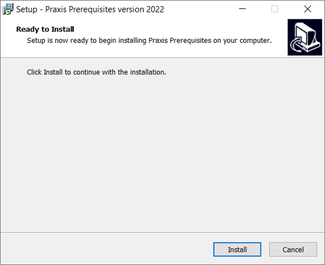
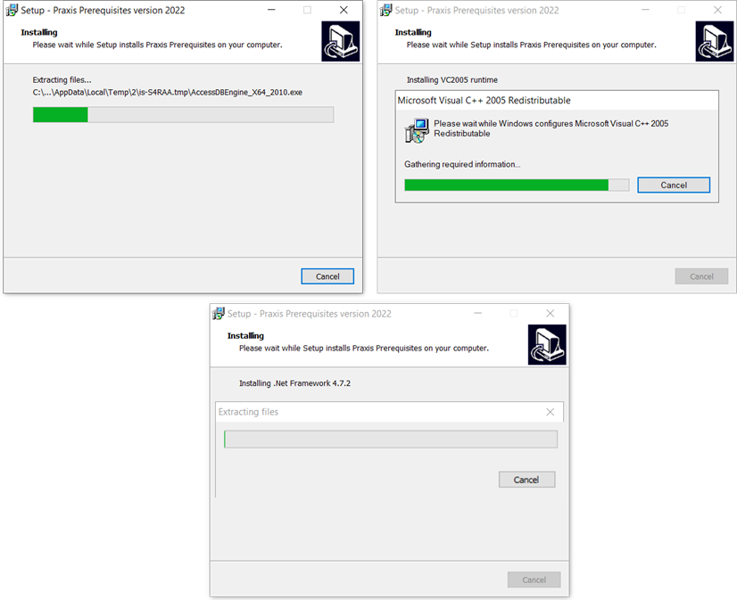
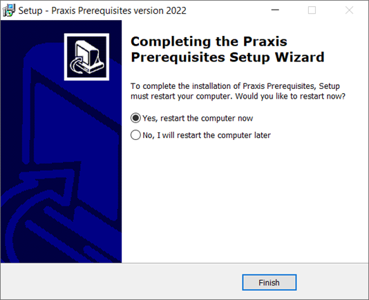

Note:
Praxis setup displays the below mentioned warning message at the beginning of Installation if the Praxis setup is run without running the Pre-Requisites. Pre-Requisite installation is necessary only for the first time and can be ignored thereafter.
Execute the PreSetup.Praxis to install all the Pre-Requisites required to run Praxis application.

Click Install to begin the Installation.

This setup installs native redistributables, .Net Frameworks and other drivers used by Praxis.

Click Finish to complete the setup and Restart the computer.
